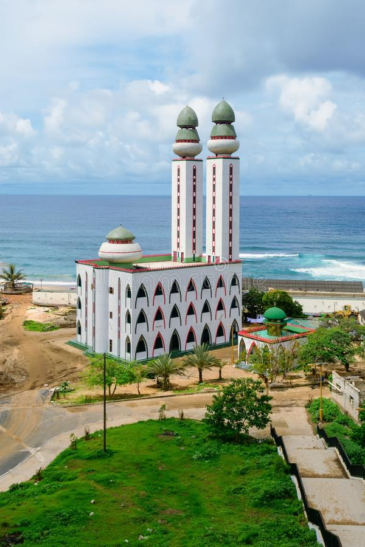
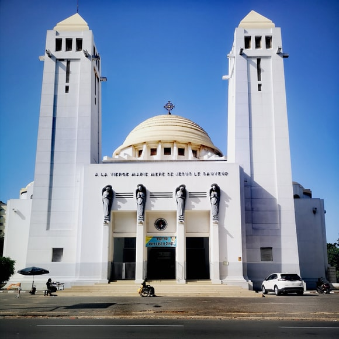
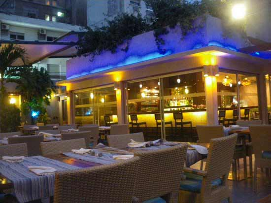

LES PLAGES LES PLUS VISITÉS
A 40 km au nord de Dakar sur la Grande Côte,un Lagon de sa forte teneur en sel,de ses algues microscopiques et de ses micro-organismes de son eau lui donnent une couleur rose d'ou son nom LAC ROSE. Selon l'heure et la lumière il passe par toutes les nuances du rose, jusqu'au mauve en fin d'après-midi.Si mes paroles ne vous suffit pas rendez-vous-y
Ô majestueux soleil levant sur le bord de la plage de Saly. Coucher sur ma pliane Ton cercle d'or auréole mon corps Susurrant à mon oreille ton langoureux message a travers les sons des houles. Toi, mon étoile, qui illumines mon jour Dépose ta lumière sur mon être glamour. . .A Saly de beaux souvenirs qu attendez-vous pour creer le votre ?
Ngor se traduit en wolof par la « dignité ». À 400 m de la baie qui porte le nom du village des pêcheurs lébou, l’île de Ngor est située au nord de la pointe des Almadies. De l’autre côté de la baie, l’océan Atlantique avec deux spots réputés pour les surfeurs : la droite et la gauche de Ngor. L’île a une dimension culturelle.Sa me rappel le festival de Ngor en décembre, l’anniversaire du décès de Bob Marley le 11 mai sont autant de moments qui attirent une foule nombreuse. Les peintres, sculpteurs, musiciens s’y sentent bien. Lors de vos balades, vous aurez l’occasion de découvrir des galeries d’art aux quatre coins de l’île.Prete pour une taversée?
LES LIEUX DE CULTES LE PLUS VISITÉS
MOSQUE TOUBA

MOSQUE DIVINITE
CATHEDRALE
RESTAURANTS
Restaurants FARID
lamatin SALY